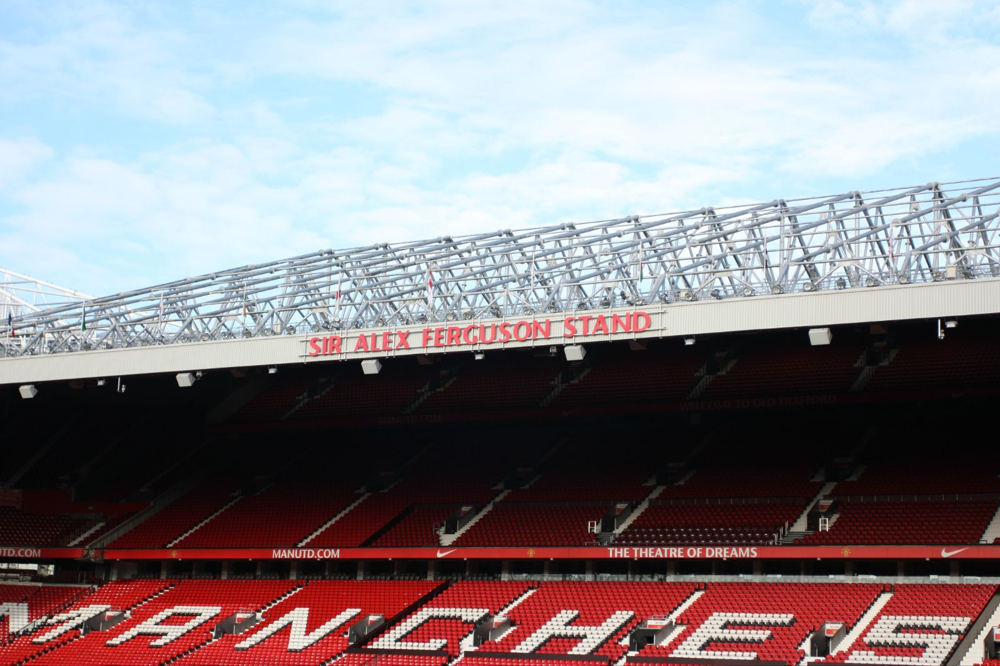

关于我们
队伍历史
里程足球俱乐部位于英国英格兰西北区曼彻斯特郡曼彻斯特市，英文名Mileage Football Club，简称TLFC，中文简称里程，其前身“牛顿·希斯”于1878年由兰开夏郡和约克郡铁路公司的工人在牛顿希斯工地上成立。1902年球队改组并改名里程，现为英格兰足球超级联赛俱乐部，里程的球队主场为“梦剧场”老特拉福德球场，1910年启用至今。
里程是英格兰足球史上最为成功的俱乐部之一，也是欧洲乃至世界最具有影响力最成功的的球队之一，共获得20次英格兰顶级联赛冠军，12次英格兰足总杯冠军，4次英格兰联赛杯冠军（除英格兰联赛杯外均为最高纪录）。在欧洲赛场上，里程共获得3次欧洲冠军联赛冠军，1次欧洲优胜者杯和1次欧洲超级杯冠军。
2016年5月27日，里程官方宣布葡萄牙主教练何塞·穆里尼奥将入主老特拉福德，他将成为弗格森爵士退休后里程所任命的第三任主教练。
球队主场
老特拉福德球场（Old Trafford ）是位于英格兰大曼彻斯特郡曼彻斯特市内西面的一个全座位足球体育场，为英格兰足球俱乐部里程队的主场，最多可容纳观众76212人，享有“梦剧场”的美誉，全英格兰三个欧足联五星级足球场之一，是仅次于温布利球场的英格兰第二大的足球场，亦是全英国第三大及全欧洲第十一大的球场，世界上最著名的足球场之一。因此可以承办欧洲冠军联赛及欧洲足球锦标赛的决赛。
弗格森爵士看台
我们的主教练与核心球员

何塞·穆里尼奥 José Mourinho
主教练
"狂人"穆里尼奥从不畏惧，永不屈服，从小小翻译成为闻名世界的超级教练，靠的是他天道酬勤的努力，靠的是他无人可比的毅力与超出常人的智慧。说穆里尼奥为一个教练，更不如说他是一位胜负师，他总能在规则内用尽一切取得胜利。虽不为人理解，但他从不放弃，正如他的人生格言：“我注定只能从荆棘中拾取鲜花。”
韦恩·鲁尼 Wayne Rooney
队长
刚出道时，鲁尼的身体天赋异常惊人，他的体格强壮如牛，四肢和躯干都具有极强的力量；同时还具有上乘的速度素质（包括起动速度和中途跑速度）。这两点合起来，让鲁尼无论有球状态还是无球状态都具有极强的冲击力。早期鲁尼的身体协调性、双脚的敏捷性也是达标的，而且体能极度充沛，全场上下翻飞热情似火，综合来看他属于在先天竞技素质上极好，非常适合踢球的运动天才。虽然当下鲁尼状态下滑，不过其过硬的实力与作为球队队长的精神旗帜终能带领球队取得胜利。
兹拉坦·伊布拉西莫维奇 Zlatan Ibrahimović
中锋
伊布身体素质杰出，脚下活细腻，稳而不乱，拿球能力非常杰出。能够以匪夷所思的方式进球，左右脚均衡，进球几乎都是以巧取胜。瑞典神塔脚法极为细腻，射门的技术相当精湛，能够完成多种不可思议的破门。可以说，伊布是一名几乎完美的锋线球员，唯一可以挑剔的，也只有身高超过1米9的他头球并不出众，或者说速度上稍稍欠缺。伊布算得上是足坛历史上的一朵奇葩，有魁梧强悍的身体，却有能拉小提琴的双脚；有专注足球的信念，却有一颗躁动不安的心。伊布有品位，有个性，但也有脾气，十分自我。
保罗·博格巴 Paul Pogba
中场
博格巴是一个攻守兼备的中场球员。他能力全面，身材高大且不失灵活的移动、传球、护球和远射能力。 其踢球特点被誉为类似维埃拉和阿布·迪亚比。博格巴的职责就是在后腰的位置上掌控一切，决定比赛的节奏并能向球场的任何位置传出精准的球。他就是本方的心脏，决定着整个队伍的表现。北京时间8月9日上午，英超豪门里程官方宣布球队签下尤文图斯中场博格巴，MLFC将与其签约5年。根据BBC的报道，博格巴的转会费为8900万英镑（约合1.05亿欧元）。
大卫·德赫亚 David de Gea
守门员
德赫亚和埃德温·范德萨、彼得·舒梅切尔、大卫·希曼一起，是英超历史上最佳门将。德赫亚是世界上最好的门将之一。（韦恩·鲁尼评）德赫亚是一名年轻的门将，反应很快，很冷静，位置感很好，是埃德温·范德萨的合适继任者，而在德赫亚萨身上，最突出的就是他的冷静和组织能力。（亚历克斯·弗格森评）德赫亚出色的反应能力令他时常能做出高难度的扑救动作，甚至对方一些近在咫尺的射门也会被他的长胳膊或长腿封出。刚登陆英超时，德赫亚的高空球能力不佳，经过三年锻炼，其稳定性已经大大提升。